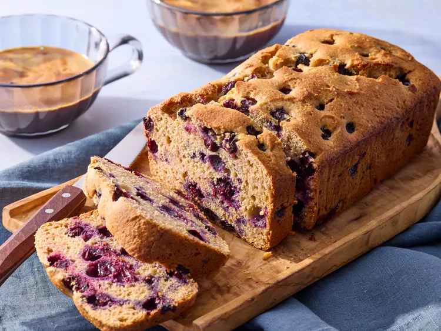

Home
Cottage Cheese Blueberry Breakfast Cake
This cottage cheese blueberry breakfast cake is a lemony loaf cake studded with a full pint of fresh blueberries.
It's a perfect not-too-sweet breakfast or snack cake.

Ingredients:
- All-Purpose flour: 95g
- All-Puporse flour for dusting: 8g
- Whole wheat flour: 95g
- Baking Powder: 10g
- Salt: 3g
- Cottage cheese: 185g
- Honey: 256g
- Oil: 83g
- Lemon zest: 15ml
- Lemon juice: 46g
- Vanilla extract: 15ml
- Eggs: 2 large
- Fresh blueberries: 480ml
Instructions:
- Pre-heat your oven at 180ºC.
- In a large bowl, whisk together the all-purpose flour, the wheat flour, the baking powder and the salt until well combined.
- Combine cottage cheese, honey, oil, lemon zest and juice, and vanilla in a blender container. Cover and blend until smooth.
- Add the sugar and honey. Whisk until the sugar has dissolved and the mixture is smooth.
- Stir eggs into cottage cheese mixture.
- Add cottage cheese mixture to flour mixture; stir to combine.
- Toss blueberries with remaining 8g of flour in a bowl. Fold blueberries into batter. Pour batter into the prepared pan.
- Bake until a toothpick inserted in the center comes out clean, about 1 hour. Let cool in pan on a wire rack 10 minutes.
- Remove from pan and cool completely on a wire rack before slicing and serving.